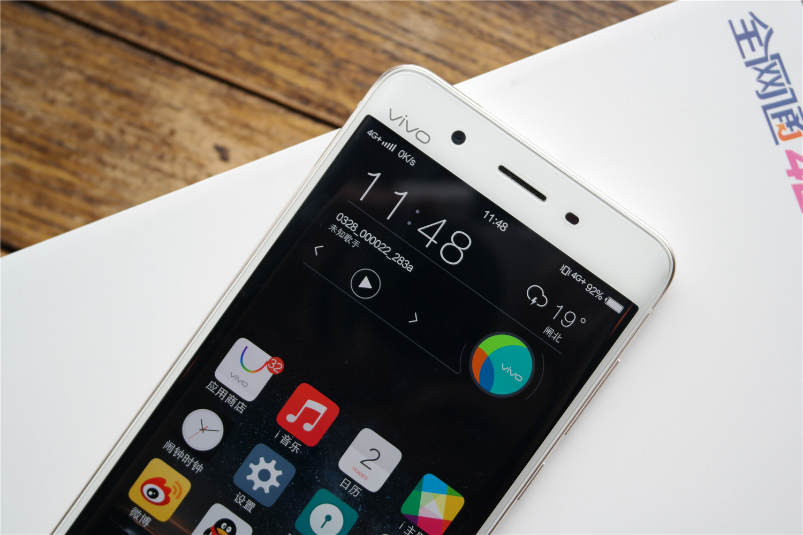
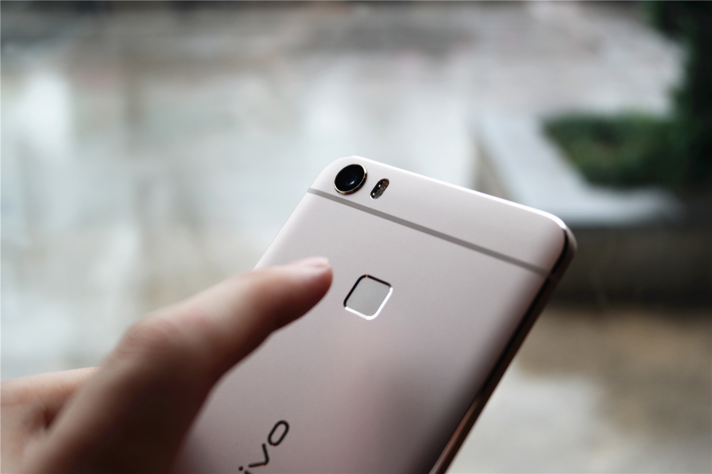
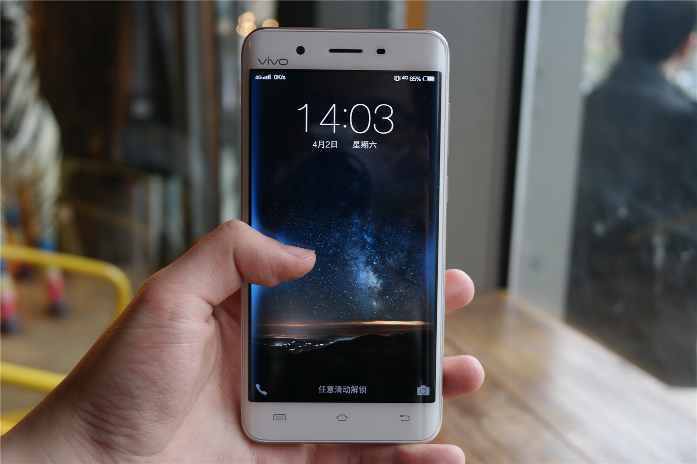
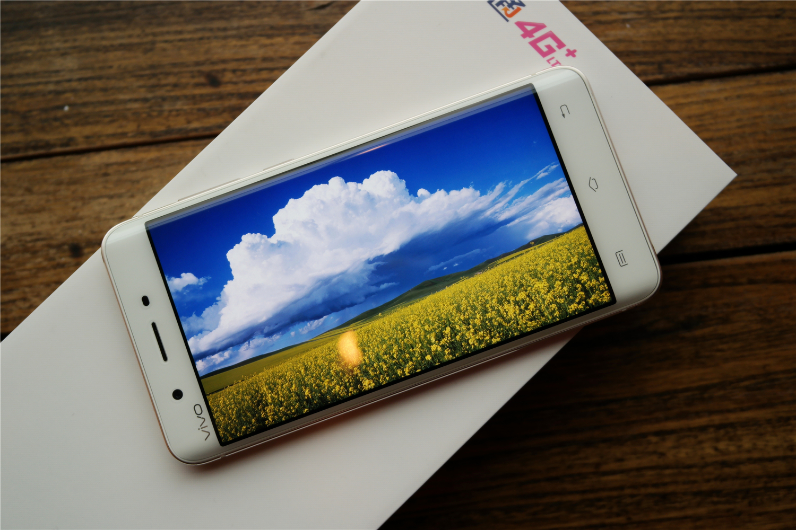
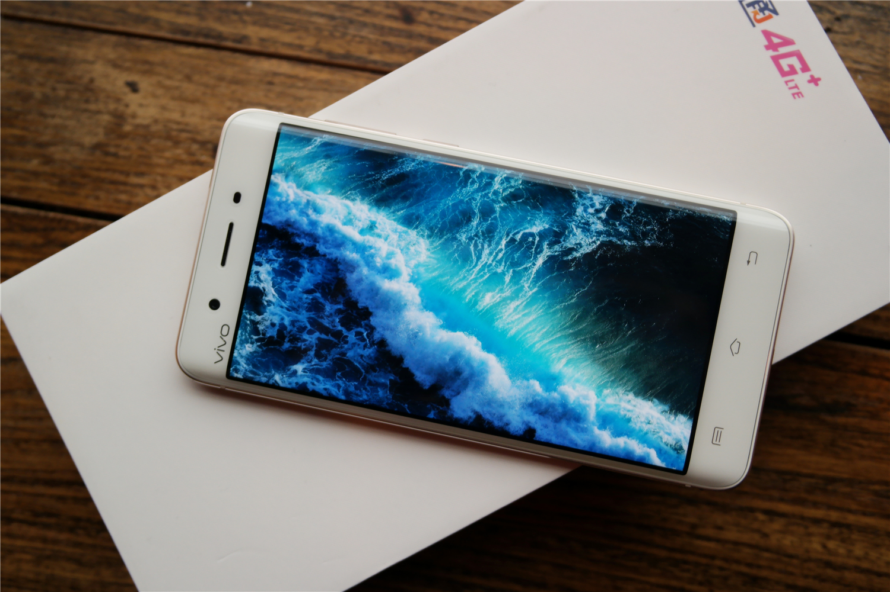
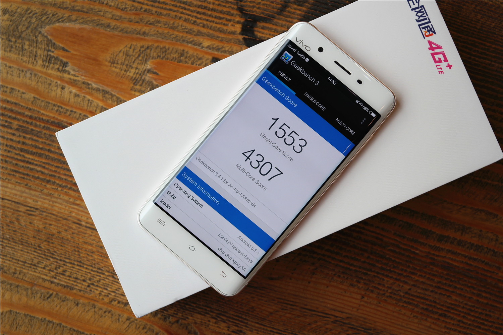
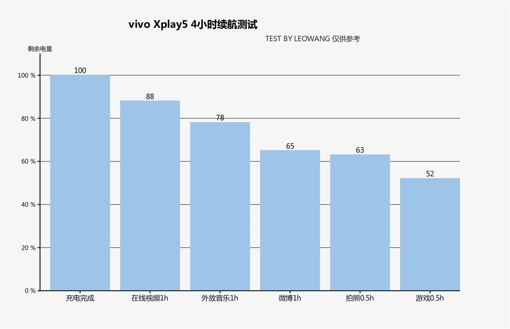
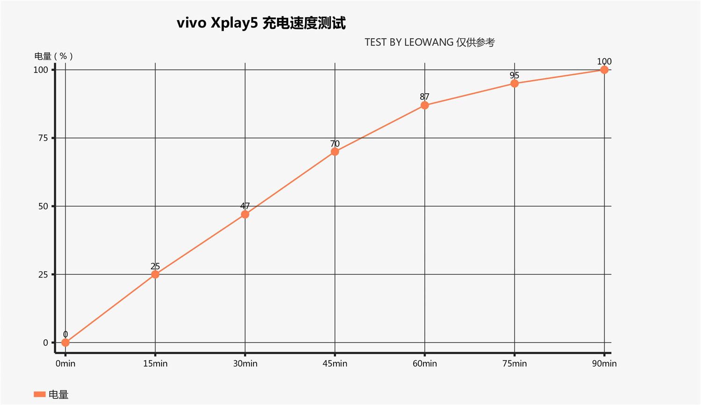
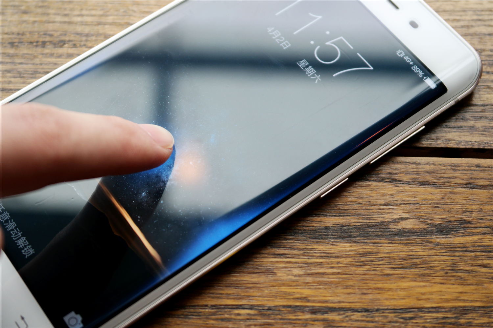

vivo Xplay5 Review
22/10/2016

vivo Xplay5 Review

- Size: 153.5X76.2X7.59mm
- Weight: 167.8g
- Battery: 3600mAh
- Screen size: 5.43 inch
- SOC: Snapdragon 652
- Camera: 1600w/800w
- Resolution:2560*1440
- Price:$600
The original review is in CHINESE. This is a translated version by GOOGLE TRANSLATE.
Xplay5 has two versions of Standard and Ultimate. Both versions have a 2K-screen and 128GB flash memory, the difference is in the SOC, memory and Hifi configuration. What I reviewed is the standard version of Xplay5, which is equipped with Xiao Long 652 chip, 4GB ram, 128GB rom, 3600mAh battery, 1600 pixel camera, 2K resolution hyperbolic screen. From the configuration point of view, even the standard version also appears to be quite sincere, in line with its high-end flagship positioning.

When I first saw Xplay5, there is a familiar and unfamiliar feeling. Said it strange because the positive piece of the hyperbolic screen very visual impact, people can be a glance it and X6 series distinction. It is familiar because it is because the family family-style design language: the top left of the front of the body logo, the bottom three hot silver virtual keys. The back is divided into nano-injection molding antenna into the three-stage design, metal zirconium sand spraying process, feel moist and delicate, the overall sense of strong. I personally like this family-style design is quite a good impression.

As a flagship model, fingerprint sensor naturally will not be absent. As X6 series, Xplay5 is the back of the fingerprint identification design. The actual experience, the unlock speed and success rate is very high. Xplay5 is equipped with a dual nano sim card slot, thanks to the characteristics of Xiaolong 652, dual-card are full Netcom. As standard with 128GB storage space, TF card expansion slot becomes less necessary. Volume keys and power keys are located on the right side of the fuselage, the location is moderate. At the same time, key feedback is clear, feels good, in line with its high-end positioning.

Xplay5 does not use the usb Type-C, but with a standard Micro-usb interface. In the Type-C is not yet universal today, the choice of Micro-usb is a very wise and secure choice. Speaking of Xplay5, surface screen is not open around the topic. Last year, the Samsung S6 Edge for the first time the hyperbolic screen into the public view, it can be said that the double-curved screen in the feel and bring pleasure to the visual 2.5D arc glass is far and can not. When the finger across the edge, there is a smooth, coherent feeling. At the same time, the contents of the screen close to the edge of the formation of deformation, like a scroll-like indentation screen, as if exposure to science fiction movies.

Xplay5 is the first use of the hyperbolic screen of the domestic mobile phone, due to the same as the hyperbolic screen, Samsung's new flagship S7E will naturally become the Xplay5 contrast object. S7E and Xplay5 in the handling of the box is slightly different. Xplay5 still maintains the traditional screen + plastic mezzanine + metal frame design, the benefits of doing so is to increase the body strength, reduce the chance of falling shards. But the plastic interlayer makes a gap between the screen and the middle box, so Xplay5 feel less grip. Samsung and vivo approach has its own advantages and disadvantages, but I personally will be more inclined to the way in vivo, because the plastic mezzanine design is clearly more practical, the phone's robustness in today's complex use of the scene is particularly important. Compared with the S7E although the expense of the feel, but the Xplay5 feel still belongs to the excellent level. In addition, Xplay5 anti-misuse optimization to do is also quite good. Daily use, even if a part of the palm contact surface, it will not affect the operation. Unfortunately, Xplay5 surface screen is currently only stay in aesthetics is greater than the practical stage, in addition to unlock and cool calling animation, vivo does not give the surface screen to other functions. From the double-sided glass X5Pro to the full metal body X6, vivo for the use of materials become more mature, and ultimately in the Xplay5 metal and curved glass on the perfect fusion. Compared to the X6 series, Xplay5 more mellow in the box design brings a better grip, double curved screen to join to bring a better feel. If you want to say that regret, perhaps it is sinking up the camera bar.


Since the beginning of the Xplay series release, vivo defined as "video flagship", so the screen has been one of the Xplay series focus. From Xplay's big screen narrow border, to Xplay3S the world's first 2K screen, the Xplay5 uses a resolution of 2560 * 1440 5.43-inch hyper-super AMOLED screen, there is no doubt that the parameters of the flagship level, display Effect also belongs to the best standard.

Xplay5 standard version of the processor using the Qualcomm MSM8976 (Snapdragon 652), memory is 4GB. Snaodragon 600 series is usually considered the mid-level chip, so many people will question whether this processor can drive the 2K resolution screen, the system is smooth enough. But in fact this Feng Xiaolong 652 is launched with the 820 processor at the same time, Qualcomm to its position is "second only to 820", with the previously criticized the 600 series is completely different.
Snapdragon 652 is a 64-bit eight-core processor, including four Cortex-A72 and four Cortex-A53, GPU Adreno510, performance is quite powerful. The actual experience, with 2K screen Xplay5 run large game is very smooth, very good control of fever, did not have to worry about performance issues.

Since the release of Xplay 3S two years ago, the popularity of 2K screen is far less than the year 720P to 1080P changes, the reason is because the 2K resolution in the perception of the upgrade is not large, while there may be a drag on battery life, Many manufacturers still adhere to the use of 1080P screen. Benefit from excellent system optimization and technology accumulation, equipped with 3600 mAh battery Xplay5 battery life level can be used to describe the satisfaction. After a 4-hour battery life test (online video 1h, putting music 1h, microblogging 1h, camera 0.5h, game 0.5h, all wifi environment, the screen 100% brightness, volume 70%). Even if the heavy use, adhere to the day is no problem. In addition, Xplay5 8-hour standby power consumption of only 3%, is a very good result.

In addition to excellent battery life, Xplay5 charging speed is quite amazing. Dual-engine flash charge with dual-charge chip and dual-charging circuit design, charging power will be between 10w and 18w intelligent adjustment, combined with the nine re-charge protection system to ensure that the phone is safe and fast charging. The actual experience, 0-100% of the charge takes only 90 minutes, 30 minutes can charge 47%.

Xplay series has always been the courage to try, self-breakthrough products. From Xplay on the Hi-Fi exploration, to the Xplay 3S 2K screen, all amazing. Xpaly5 is undoubtedly vivo in 2016 to produce a perfect answer. Hyperboloid screen, Hi-Fi, cameras and other aspects of the flagship of Andrews represents the first echelon of the standard. Xplay5 can be said to be a masterpiece, it shows the physical years of accumulation of hardware and software and service integration capabilities, is a well-deserved flagship video. At the same time, Xplay5 or vivo on the price of a probe on the attempt, the flagship version of the price of 4288 almost broke the ceiling of the price of domestic mobile phones can also be seen from the high-end market to become the ambition. Considering Xplay5 in all aspects of performance, I still think it is worth the price.